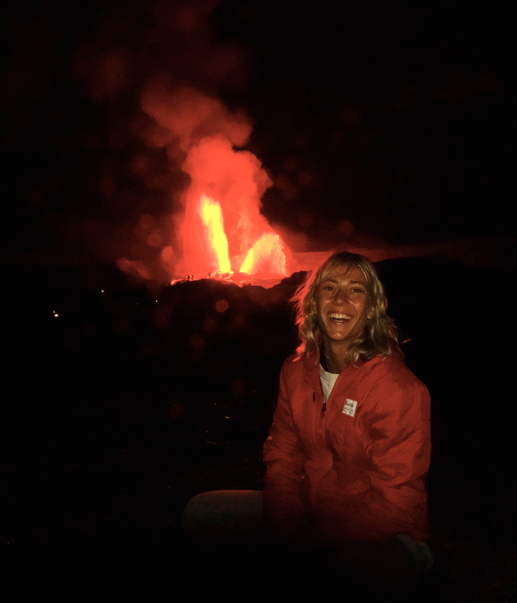

Hi, I'm
Nina
Shuping
Refresh page for a new featured photo
About

I studied sustainable urban development because I believe cities hold immense potential to be places of sustainable excellence and allow for the protection of natural environments. So many facets of our lives intersect in urban environments, making them an incredible fabric full of opportunity to build upon. This intersectional nature is what first drew me to urban planning, and what continues to motivate my work. Thoughtful planning can improve health outcomes, increase sustainability, foster community, and move us toward a more equitable world. I feel genuinely privileged to think and work within these systems, guided by a deep curiosity rooted in a longstanding interest in science and a desire to understand the "why" behind how things work.
I've been fortunate to follow my curiosity alongside people who are dedicated and ethical in their work. My experience includes affordable housing research in Hawai'i, white paper and community development work with the HomeMore Project, science communication writing, independent funded research on urban safety infrastructure, and a landscape architecture intensive at UC Berkeley's College of Environmental Design. Across these roles, I've consistently gravitated toward what I love most: reading, writing, and sharing curiosity at the intersection of research, design, and real-world impact.
Interdisciplinary ideas and methods have been the center of my own practice. As I grow I am looking to continue learning from experienced practitioners while contributing strong research, communication, and interdisciplinary thinking.
Work
HomeMore Inc.
2020–2024Research Lead
Hawaii Institute of Geophysics
and Planetology
2022–2024
Science Communication Writer
After School All Stars
2024Program Leader
Research Corporation of Hawaii
2019–2025Research Assistant
Education
University of Hawaii at Manoa
2018–2022BA in Sustainable Urban Development
Summa cum laude · Honors
Berkeley College of
Environmental Design
2025
Landscape Architecture Summer Intensive